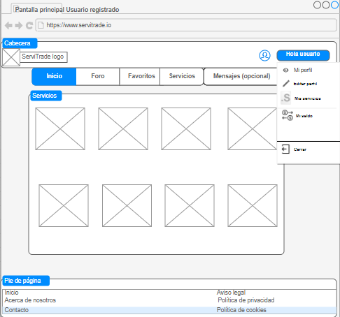
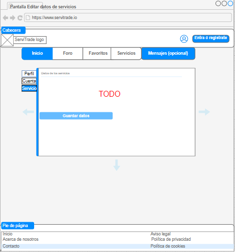

Esta página es la que se muestra al entrar en la página ServiTrade (es decir, para usuarios sin registrar). Se muestran las opciones de registrarse, una pequeña descrición de como es la página y el tablón de anuncios. Al no haber iniciado sesión, solo se podrá navegar por los sevicios (y no contratarlos).

Esta pantalla se muestra cuando un usuario se registra por primera vez.

Esta página se muestra cuando un usuario se va a registrar, ya sea por primera vez, o para inicar sesión.

En este apartado, se muestra el despliegue de opciones que aparecen al seleccionar en nuestro nombre de usuario. Entre ellas podemos disntinguir, acceder a su perfil, al apartado de Mi Saldo (es una especie de monedero en la que nos refleja los cupones servicios a favor y las deudas), Mis Servicios (en el que aparecerán los servicios pendientes de completar a otros usuarios y recibir de otros) y cerrar sesión.
En este apartado, un usuario puede modificar su inforamción personal (nombre usuario, foto o teléfono de contacto).

En este apartado, un usuario puede modificar su correo o contraseña asociada a su cuenta en ServiTrade.

En este apartado, un usuario puede modificar su sevicio ofrecido.
En este apartado, se muestra un tablón de anuncios de servicios.

En este apartado, un usuario puede contratar una persona para que le haga un servicio, añadir a favoritos, contactar con esa persona o ver los días disponibles para realizar ese servicio.

En el apartado del foro se podrán abrir nuevos temas para conversar entre los usuarios de la página. Aparece un foro por cada tipo de sevicio. Si un usuario quiere ver los mensajes de un serivicio específico, selecciona un foro concreto.

En el apartado del foro se podrán visualizar los mensajes para ese servicio concreto.

En este apartado, se pueden ver las reseñas que dejó un usuario a la persona que le ofreció el servicio. Cada usuario tendrá la opción de comentar con estrellas según la puntuación de la calidad del servicio realizado, y opiniones.

En este apartado, salen guardados los servicios que un usuario marcó como favoritos.